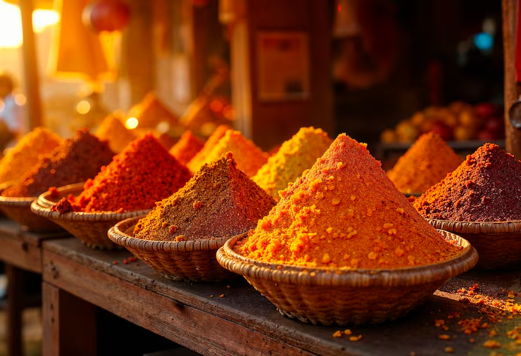
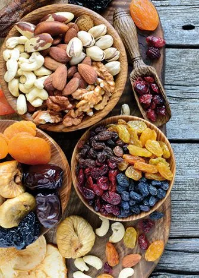

Nuestra Historia
Tradición y Pasión en Cada Snack
Desde 1985, seleccionamos los mejores ingredientes de nuestra tierra para crear momentos inolvidables de sabor y crujencia.
Explorar ProductosNuestra Misión
Brindar snacks naturales de alta calidad que promuevan el bienestar, conectando la riqueza del campo peruano con tu día a día.
Nuestra Visión
Ser líderes en snacks naturales en el Perú, promoviendo un estilo de vida saludable y sostenible.
Nuestros Valores
Compromiso con la calidad, respeto por la naturaleza y apoyo a nuestros productores locales.
Nuestra Esencia
El secreto está en la Selección Manual
En Snacks Naturin's creemos que el ojo humano es irremplazable. Cada lote de frutos secos y frutas deshidratadas pasa por un proceso de selección manual, donde descartamos cualquier pieza que no cumpla con nuestro estándar de “calidad y frescura natural”.
- ➤ Ingredientes 100% de origen natural y seleccionados cuidadosamente.
- ➤ Sin conservantes artificiales ni químicos añadidos.
- ➤ Procesos artesanales que garantizan sabor, frescura y calidad.

Nuestro Camino
El Primer Tostado
Don Ricardo comienza a tostar habas y maíz en el garaje de su casa en el Valle del Sabor.
Nuestra Primera Fábrica
Inauguramos nuestra pequeña planta de producción con 10 empleados apasionados.
Socio Estratégico
Somos el aliado que cuida tu inversión con calidad y rentabilidad, ayudando a que tu negocio crezca con confianza.
Nuestra Razón de Ser
Impulsamos el crecimiento y el disfrute a través de la honestidad, generando oportunidades para emprendedores y momentos de felicidad en las familias.
Lo que nos define
Confianza, trabajo honesto y compromiso son la base de todo lo que hacemos.
Alma Emprendedora
Naturin’s tiene el espíritu de un emprendedor experto: cercano, confiable y humano, que comparte conocimiento y disfruta los logros en familia.